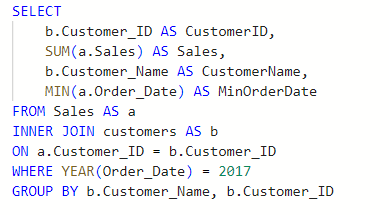

Cohort Analysis
Cohort Analysis using SQL and Power BI
Tool use: SQL and Power BI
Dataset: Data
Query and segments customers into cohorts with SQL
- Get the minimum order date of each customer
- Query data
- Result:
Finding the rate of customers retention with Power BI
- Get the number of customers retained each month after the initial month of purchase and the retention rate of the customers.
- Calculate Customer Retention %:

Visualizing your Cohort Analysis
Create a simple visual with a matrix. I will apply a conditional formating that shows the retention rate. When the format is in a darker shade of blue, it means a high retention rate and when it is lighter, it means a low retention rate. Month 0, the first month of purchase is at 100% which is the first month of purchase of all the customers in that cohort.